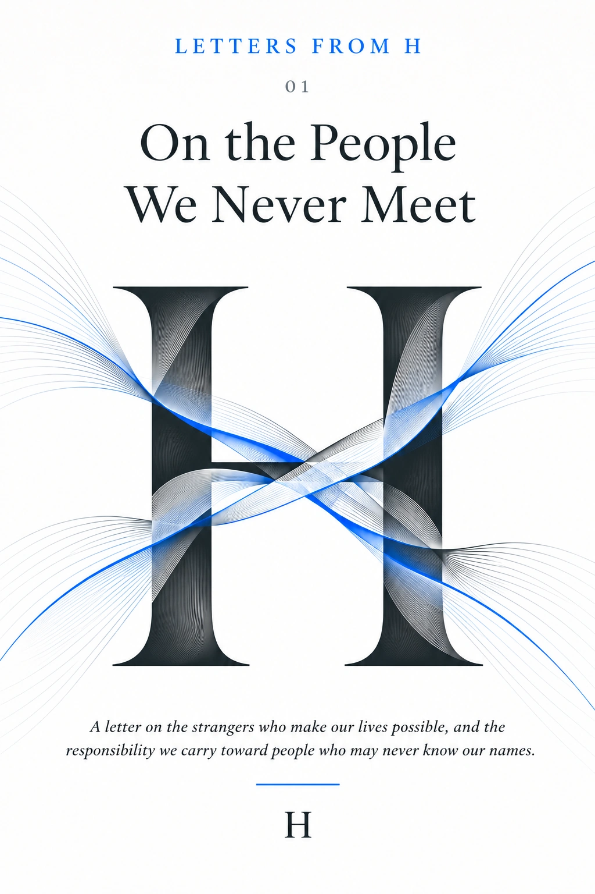
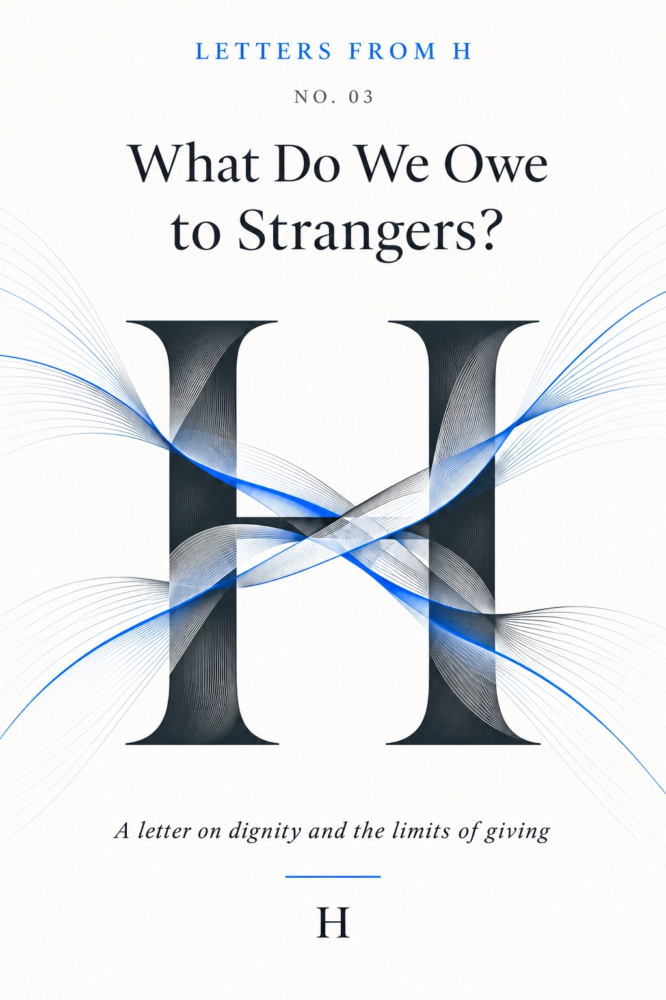

Letter 01 · Free to read
On the People We Never Meet
An essay about the strangers who make our lives possible, and the responsibility we carry toward people who may never know our names.
Questions worth examining in their own right.
These occasional essays extend themes from The Book of Chance. They are invitations to think, not instructions to believe, and each stands alone.

An essay about the strangers who make our lives possible, and the responsibility we carry toward people who may never know our names.

A letter about making careful decisions when outcomes are uncertain, and remaining accountable when things go wrong.

A letter on the duties we have to strangers, the promises we keep to loved ones, and how to help without turning care into an unlimited demand.
The first three Letters are published digital editions. Further Letters may follow occasionally; no fixed schedule is promised.
Browse the rest of the Library →